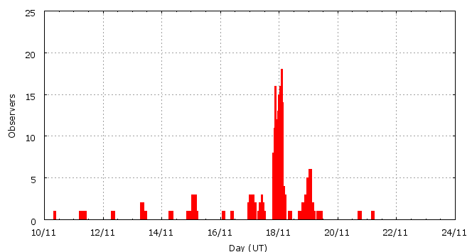

Activity profile
Activity profileThis page shows automated results of the Leonids 2007, based on visual data entered through the IMO electronic report form. Send your feedback regarding this page to Geert Barentsen or visit the project pages. Note that automated results are not suitable for scientific use!
Page generated on 23 December 2007 at 15:04 UT.
ZHRmax = 35 based on 1079 Leonids in 293 data intervals, assuming fixed population index r = 2.0 and zenith correction 1/sin(hR).

| Time (UT) | Solarlon | nINT | nLEO | ZHR | |
|---|---|---|---|---|---|
| 2007-11-11 01:57 | 228.185 | 4 | 1 | 2 | +-1 |
| 2007-11-12 01:00 | 229.151 | 3 | 2 | 4 | +-2 |
| 2007-11-13 12:46 | 230.650 | 6 | 24 | 10 | +-2 |
| 2007-11-15 01:58 | 232.211 | 28 | 35 | 7 | +-1 |
| 2007-11-16 22:26 | 234.078 | 12 | 45 | 9 | +-1 |
| 2007-11-17 04:05 | 234.315 | 4 | 45 | 15 | +-2 |
| 2007-11-17 08:55 | 234.518 | 4 | 47 | 14 | +-2 |
| 2007-11-17 20:57 | 235.023 | 14 | 45 | 15 | +-2 |
| 2007-11-17 23:28 | 235.129 | 28 | 46 | 16 | +-2 |
| 2007-11-18 00:38 | 235.178 | 21 | 75 | 26 | +-3 |
| 2007-11-18 01:25 | 235.211 | 27 | 91 | 18 | +-2 |
| 2007-11-18 02:11 | 235.244 | 29 | 102 | 24 | +-2 |
| 2007-11-18 02:57 | 235.276 | 26 | 108 | 22 | +-2 |
| 2007-11-18 03:39 | 235.305 | 15 | 59 | 22 | +-3 |
| 2007-11-18 04:39 | 235.347 | 6 | 48 | 16 | +-2 |
| 2007-11-18 10:42 | 235.601 | 15 | 48 | 27 | +-4 |
| 2007-11-18 22:07 | 236.081 | 10 | 55 | 30 | +-4 |
| 2007-11-18 23:52 | 236.154 | 8 | 48 | 35 | +-5 |
| 2007-11-19 01:27 | 236.221 | 13 | 49 | 27 | +-4 |
| 2007-11-19 02:24 | 236.261 | 9 | 47 | 30 | +-4 |
| 2007-11-19 07:06 | 236.459 | 8 | 41 | 18 | +-3 |
| 2007-11-20 21:58 | 238.092 | 3 | 18 | 12 | +-3 |
For each estimation interval: time is the middle of the interval, nINT is the number of observing periods and nLEO is the number of Leonids involved. ZHR = (1 + sum nLEO) / sum(Teff/C) where Teff is the effective observing time and C is the total correction for limiting magnitude, clouds and zenith correction. The solar longitudes refer to equinox J2000.0.
Data has been received from 48 observers in 15 countries. Thank you for your efforts!

| Observer | Country | Teff | nLEO |
|---|---|---|---|
| Salvador Aguirre | unknown | 10.30h | 39 |
| Geert Barentsen | Belgium | 2.10h | 19 |
| Jean-marie Biets | Belgium | 5.51h | 21 |
| Mark Davis | United States | 2.50h | 3 |
| Samer Derbi | Jordan | 1.00h | 4 |
| Shishir Deshmukh | India | 3.75h | 18 |
| Sumeet Deshmukh | India | 1.97h | 4 |
| Sietse Dijkstra | Netherlands | 11.47h | 59 |
| Shlomi Eini | Israel | 3.91h | 41 |
| William Godley | United States | 3.04h | 15 |
| Shy Halatzi | Israel | 1.05h | 15 |
| Wayne T. Hally | United States | 4.10h | 1 |
| Vilem Heblik | Czech Republic | 1.50h | 14 |
| Carl Johannink | Netherlands | 3.00h | 25 |
| Bhargav Joshi | India | 2.58h | 6 |
| Akshay Kanchane | India | 0.99h | 1 |
| Amol Kate | India | 1.50h | 6 |
| Nikhil Kolthankar | India | 1.50h | 2 |
| Peter Kozich | unknown | 1.02h | 13 |
| Jens Lacorne | France | 1.20h | 3 |
| Greet Lembregts | Belgium | 0.86h | 2 |
| Jan Lembregts | Belgium | 0.73h | 3 |
| Peter Van Leuteren | Netherlands | 8.25h | 54 |
| Anna S. Levina | Israel | 9.23h | 109 |
| Alister Ling | Canada | 2.61h | 5 |
| Xin Li | China | 1.78h | 25 |
| Bruce Mccurdy | Canada | 7.00h | 33 |
| Koen Miskotte | Netherlands | 8.81h | 75 |
| Mohammad Nilforoushan | Iran | 1.53h | 30 |
| Tereza Novotna | Czech Republic | 0.75h | 7 |
| Daniel Van Os | Netherlands | 5.00h | 39 |
| Swapnil Pawar | India | 1.98h | 3 |
| Shridhar Pophali | India | 3.07h | 10 |
| Jurgen Rendtel | Germany | 2.20h | 13 |
| Nathan Schulpen | Belgium | 1.08h | 18 |
| Nathan Schulpen | Belgium | 1.08h | 20 |
| Rene Scurbecq | Belgium | 3.06h | 21 |
| Rohan Shewale | India | 3.00h | 20 |
| Dhanashree Shinde | India | 0.99h | 1 |
| Shigeo Uchiyama | Japan | 4.15h | 53 |
| Hendrik Vandenbruaene | Belgium | 1.92h | 13 |
| Michel Vandeputte | Belgium | 15.77h | 131 |
| Sicco Van Hoegee | Netherlands | 12.23h | 71 |
| Myriam Vingerhoets | Belgium | 2.69h | 26 |
| Amogh Waghmare | India | 1.43h | 4 |
| Jiangping Wu | China | 1.30h | 21 |
| Jin Zhu | China | 1.25h | 17 |
Create your own analysis!
Rate intervals: leo2007_rate.csv (CSV-format).
Magnitude distributions: leo2007_magn.csv (CSV-format).